Previsão de Temperatura Horária em Niterói
Redes Neurais Recorrentes (LSTM)
Author
Caio Salviano (caiosalviano@id.uff.br)
Richard Melo (richardmelo@id.uff.br)
Introdução
Motivação
O Problema
- Previsão de temperatura horária é simples e útil no cotidiano
- Influencia saídas, atividades ao ar livre, consumo de energia e conforto térmico
- Temperatura varia ao longo do dia em padrões recorrentes e aprendíveis
O Objetivo
- Treinar modelos LSTM para prever a temperatura horária do ar em Niterói, RJ
- Comparar modelos — diferentes janelas e horizontes de previsão
Dados
Os dados
Origem
- ERA5-Land — base principal
- ECMWF & Copernicus
- Resolução espacial:
~9 km - Resolução temporal:
1 h - Sem NAs — dado de satélite + modelo físico
- Atraso de até 6 dias em relação à data atual
- Open Meteo / NASA GEOS-FP — complemento
- Cobrem os dias mais recentes via API
- Viabilizam previsões para datas futuras
Cobertura
Local: Niterói, RJ
Período: 0h 31/12/2009 → 23h 30/06/2026
| Variável | Unidade |
|---|---|
| Temperatura do ar | °C |
| Temperatura da superfície | °C |
| Radiação solar líquida | J/m² |
| Radiação térmica líquida | J/m² |
| Fluxo de calor sensível | J/m² |
| Fluxo de calor latente | J/m² |
| Ponto de orvalho | °C |
| Umidade relativa | % |
| Precipitação | mm |
| Vento Leste-Oeste | m/s |
| Vento Norte-Sul | m/s |
| Velocidade do Vento | m/s |
| Pressão atmosférica | Pa |
Metodologia
Metodologia
Análise Descritiva
→
Proposição das Hipóteses
→
Processamento dos Modelos
→
Análises e Comparações
Divisão da Base
| Conjunto | Prop. |
|---|---|
| Treino | 70% |
| Validação | 15% |
| Teste | 15% |
Divisão cronológica
Cada partição cobre todas as estações
Janelas (h)
| Janela | Captura |
|---|---|
| 24h | 1 dia |
| 48h | 2 dias |
| 72h | 3 dias |
| 96h | 4 dias |
| 168h | 7 dias |
Horizontes (k)
| k | Alvo |
|---|---|
| 1h–24h | Horária |
- 96 modelos treinados
- Mesma arquitetura em todos
- Isolando o efeito da janela e do k
Arquitetura LSTM
- 64 unidades LSTM
- Dropout 0,2
- Otimizador Adam
- Taxa de aprendizado 0,001
- Early stopping na validação
- 3–5 épocas por modelo
Métricas: RMSE · MAE · R²
Exploração
Análise Descritiva
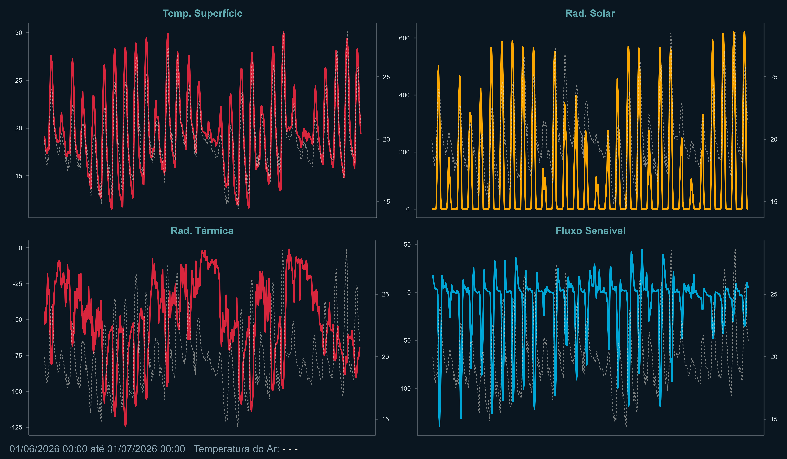
Análise Descritiva
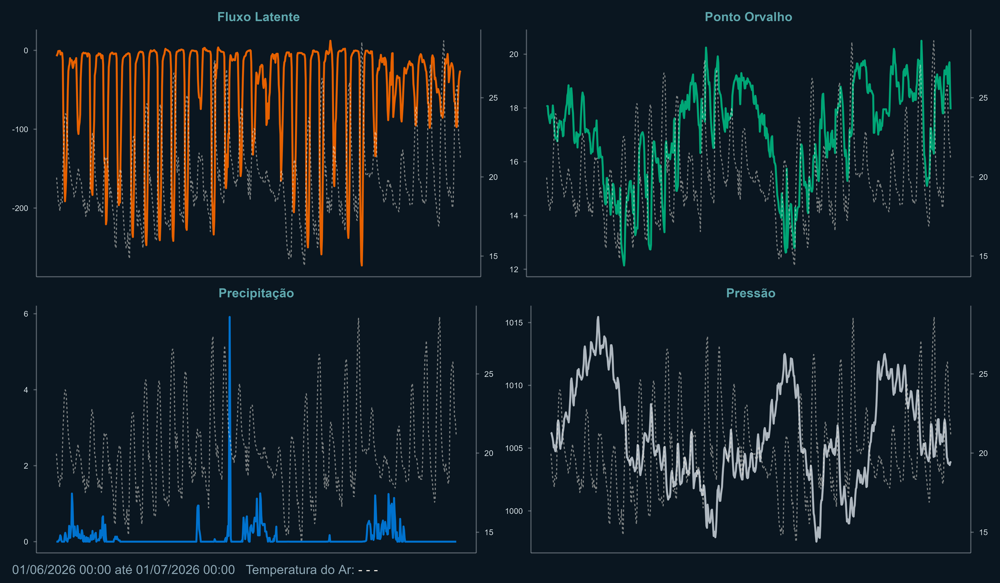
Análise Descritiva
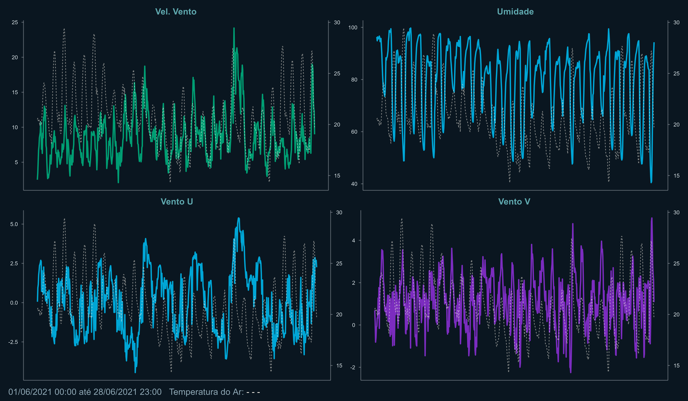
Autocorrelação da Temperatura Horária
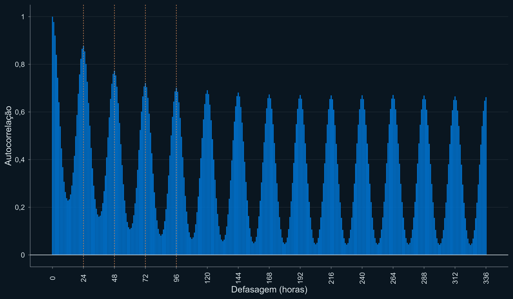
Resultados
Todos os Modelos
| Horizonte (k) | Janela (h) | RMSE (°C) | MAE (°C) | R² |
|---|---|---|---|---|
| 1h | 24 | 0,826 | 0,617 | 0,960 |
| 1h | 48 | 0,754 | 0,562 | 0,967 |
| 1h | 72 | 0,776 | 0,588 | 0,965 |
| 1h | 96 | 0,754 | 0,570 | 0,967 |
| 2h | 24 | 0,810 | 0,605 | 0,962 |
| 2h | 48 | 0,803 | 0,596 | 0,962 |
| 2h | 72 | 0,872 | 0,653 | 0,956 |
| 2h | 96 | 0,912 | 0,686 | 0,951 |
| 3h | 24 | 0,932 | 0,689 | 0,949 |
| 3h | 48 | 0,899 | 0,673 | 0,953 |
| 3h | 72 | 0,933 | 0,691 | 0,949 |
| 3h | 96 | 0,933 | 0,695 | 0,949 |
| 4h | 24 | 1,000 | 0,735 | 0,942 |
| 4h | 48 | 0,984 | 0,721 | 0,943 |
| 4h | 72 | 0,975 | 0,713 | 0,944 |
| 4h | 96 | 1,018 | 0,760 | 0,939 |
| 5h | 24 | 1,082 | 0,794 | 0,932 |
| 5h | 48 | 1,060 | 0,785 | 0,934 |
| 5h | 72 | 1,013 | 0,734 | 0,940 |
| 5h | 96 | 1,072 | 0,790 | 0,933 |
| 6h | 24 | 1,132 | 0,828 | 0,925 |
| 6h | 48 | 1,122 | 0,810 | 0,926 |
| 6h | 72 | 1,099 | 0,808 | 0,929 |
| 6h | 96 | 1,100 | 0,805 | 0,929 |
| 7h | 24 | 1,172 | 0,854 | 0,920 |
| 7h | 48 | 1,157 | 0,836 | 0,922 |
| 7h | 72 | 1,156 | 0,837 | 0,922 |
| 7h | 96 | 1,129 | 0,810 | 0,925 |
| 8h | 24 | 1,214 | 0,882 | 0,914 |
| 8h | 48 | 1,249 | 0,900 | 0,909 |
| 8h | 72 | 1,202 | 0,884 | 0,916 |
| 8h | 96 | 1,226 | 0,880 | 0,912 |
| 9h | 24 | 1,261 | 0,911 | 0,907 |
| 9h | 48 | 1,268 | 0,930 | 0,906 |
| 9h | 72 | 1,259 | 0,912 | 0,907 |
| 9h | 96 | 1,215 | 0,870 | 0,914 |
| 10h | 24 | 1,283 | 0,928 | 0,904 |
| 10h | 48 | 1,290 | 0,934 | 0,903 |
| 10h | 72 | 1,313 | 0,954 | 0,899 |
| 10h | 96 | 1,286 | 0,940 | 0,903 |
| 11h | 24 | 1,355 | 0,987 | 0,893 |
| 11h | 48 | 1,314 | 0,948 | 0,899 |
| 11h | 72 | 1,378 | 1,014 | 0,889 |
| 11h | 96 | 1,310 | 0,948 | 0,900 |
| 12h | 24 | 1,363 | 0,981 | 0,891 |
| 12h | 48 | 1,339 | 0,959 | 0,895 |
| 12h | 72 | 1,333 | 0,965 | 0,896 |
| 12h | 96 | 1,377 | 1,005 | 0,889 |
| 13h | 24 | 1,438 | 1,057 | 0,879 |
| 13h | 48 | 1,379 | 1,005 | 0,889 |
| 13h | 72 | 1,372 | 1,001 | 0,890 |
| 13h | 96 | 1,398 | 1,026 | 0,886 |
| 14h | 24 | 1,412 | 1,027 | 0,883 |
| 14h | 48 | 1,401 | 1,008 | 0,885 |
| 14h | 72 | 1,391 | 1,009 | 0,887 |
| 14h | 96 | 1,405 | 1,019 | 0,885 |
| 15h | 24 | 1,412 | 1,029 | 0,883 |
| 15h | 48 | 1,438 | 1,050 | 0,879 |
| 15h | 72 | 1,408 | 1,020 | 0,884 |
| 15h | 96 | 1,422 | 1,036 | 0,882 |
| 16h | 24 | 1,439 | 1,045 | 0,879 |
| 16h | 48 | 1,434 | 1,033 | 0,880 |
| 16h | 72 | 1,460 | 1,075 | 0,875 |
| 16h | 96 | 1,463 | 1,069 | 0,875 |
| 17h | 24 | 1,550 | 1,138 | 0,859 |
| 17h | 48 | 1,483 | 1,077 | 0,871 |
| 17h | 72 | 1,478 | 1,067 | 0,872 |
| 17h | 96 | 1,530 | 1,116 | 0,863 |
| 18h | 24 | 1,516 | 1,104 | 0,866 |
| 18h | 48 | 1,498 | 1,084 | 0,869 |
| 18h | 72 | 1,519 | 1,103 | 0,865 |
| 18h | 96 | 1,485 | 1,071 | 0,871 |
| 19h | 24 | 1,541 | 1,116 | 0,861 |
| 19h | 48 | 1,572 | 1,135 | 0,855 |
| 19h | 72 | 1,568 | 1,140 | 0,856 |
| 19h | 96 | 1,544 | 1,106 | 0,861 |
| 20h | 24 | 1,574 | 1,134 | 0,855 |
| 20h | 48 | 1,602 | 1,163 | 0,850 |
| 20h | 72 | 1,602 | 1,167 | 0,850 |
| 20h | 96 | 1,586 | 1,144 | 0,853 |
| 21h | 24 | 1,598 | 1,148 | 0,851 |
| 21h | 48 | 1,641 | 1,188 | 0,842 |
| 21h | 72 | 1,601 | 1,149 | 0,850 |
| 21h | 96 | 1,617 | 1,168 | 0,847 |
| 22h | 24 | 1,663 | 1,204 | 0,838 |
| 22h | 48 | 1,644 | 1,186 | 0,842 |
| 22h | 72 | 1,664 | 1,202 | 0,838 |
| 22h | 96 | 1,671 | 1,210 | 0,837 |
| 23h | 24 | 1,707 | 1,242 | 0,829 |
| 23h | 48 | 1,669 | 1,203 | 0,837 |
| 23h | 72 | 1,685 | 1,224 | 0,834 |
| 23h | 96 | 1,702 | 1,230 | 0,831 |
| 24h | 24 | 1,696 | 1,229 | 0,832 |
| 24h | 48 | 1,716 | 1,239 | 0,828 |
| 24h | 72 | 1,719 | 1,249 | 0,827 |
| 24h | 96 | 1,716 | 1,238 | 0,828 |
RMSE por Horizonte e Janela
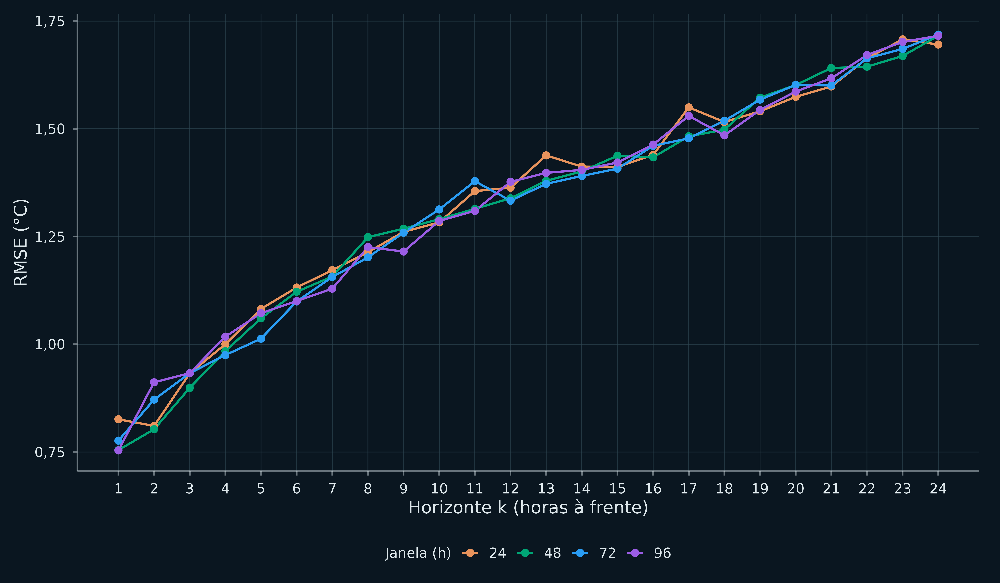
R² por Horizonte e Janela
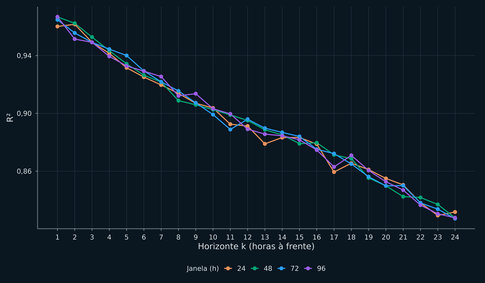
Melhores Modelos
| Horizonte (k) | Janela (h) | RMSE (°C) | MAE (°C) | R² |
|---|---|---|---|---|
| 1h | 96 | 0,754 | 0,570 | 0,967 |
| 2h | 48 | 0,803 | 0,596 | 0,962 |
| 3h | 48 | 0,899 | 0,673 | 0,953 |
| 4h | 72 | 0,975 | 0,713 | 0,944 |
| 5h | 72 | 1,013 | 0,734 | 0,940 |
| 6h | 72 | 1,099 | 0,808 | 0,929 |
| 7h | 96 | 1,129 | 0,810 | 0,925 |
| 8h | 72 | 1,202 | 0,884 | 0,916 |
| 9h | 96 | 1,215 | 0,870 | 0,914 |
| 10h | 24 | 1,283 | 0,928 | 0,904 |
| 11h | 96 | 1,310 | 0,948 | 0,900 |
| 12h | 72 | 1,333 | 0,965 | 0,896 |
| 13h | 72 | 1,372 | 1,001 | 0,890 |
| 14h | 72 | 1,391 | 1,009 | 0,887 |
| 15h | 72 | 1,408 | 1,020 | 0,884 |
| 16h | 48 | 1,434 | 1,033 | 0,880 |
| 17h | 72 | 1,478 | 1,067 | 0,872 |
| 18h | 96 | 1,485 | 1,071 | 0,871 |
| 19h | 24 | 1,541 | 1,116 | 0,861 |
| 20h | 24 | 1,574 | 1,134 | 0,855 |
| 21h | 24 | 1,598 | 1,148 | 0,851 |
| 22h | 48 | 1,644 | 1,186 | 0,842 |
| 23h | 48 | 1,669 | 1,203 | 0,837 |
| 24h | 24 | 1,696 | 1,229 | 0,832 |
Ajuste por Horizonte
Real × Previsto — k = 1 hora
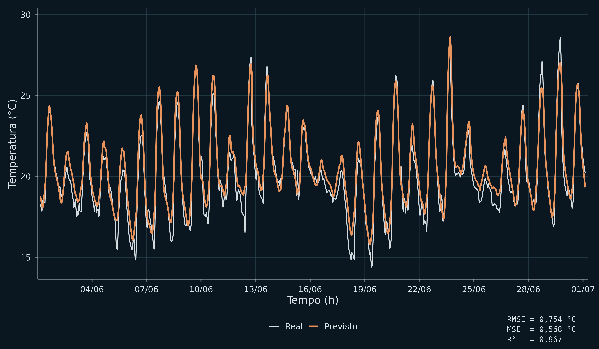
Real × Previsto — k = 6 horas
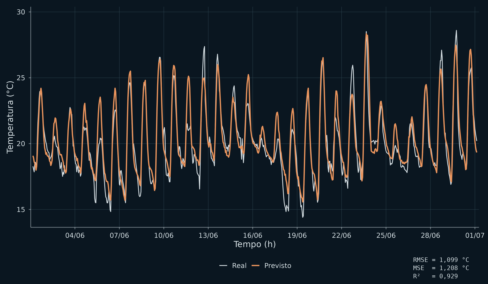
Real × Previsto — k = 12 horas
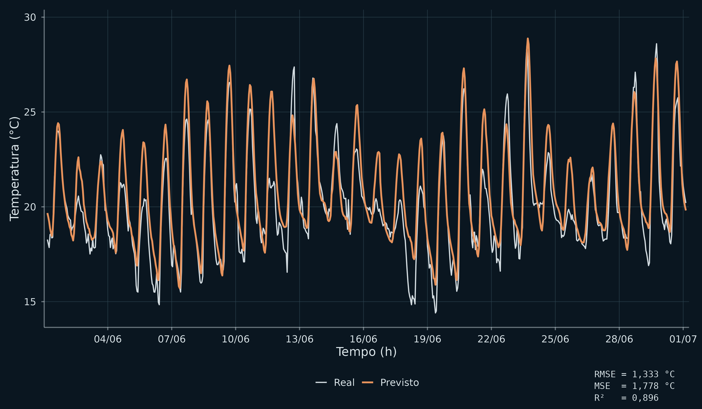
Real × Previsto — k = 18 horas
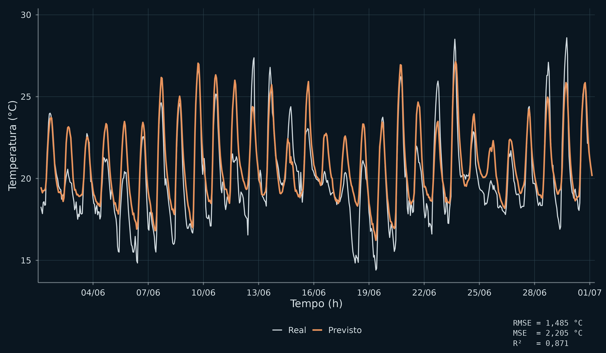
Real × Previsto — k = 24 horas
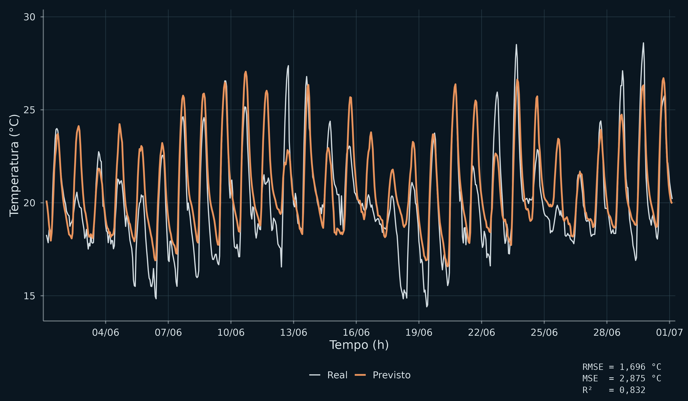
Evolução do Ajuste
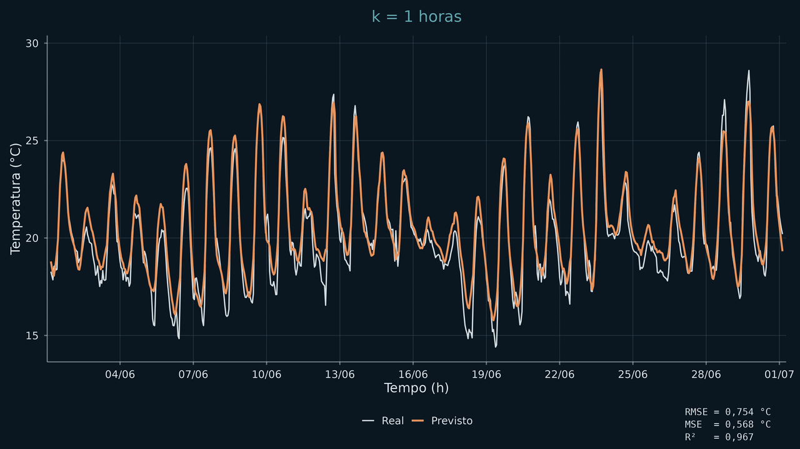
Previsões
Previsões de Temperatura Horária por Janela
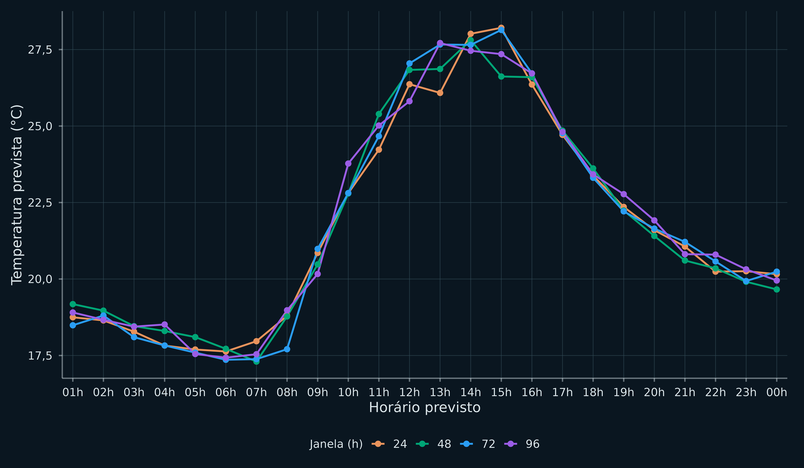
Previsão Final de Temperatura Horária
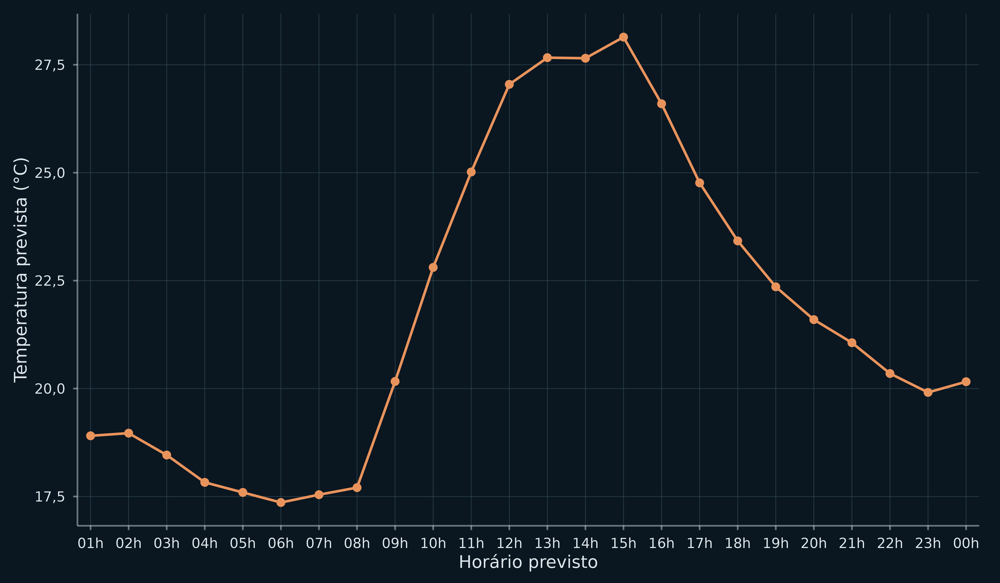
Conclusão
Conclusão
O que foi feito
- 96 modelos LSTM treinados e comparados
- Variável-alvo: temperatura horária
- Janelas de 24h a 168h, horizontes de 1h a 24h
- Mesma arquitetura em todos os modelos — isolando o efeito dos hiperparâmetros
- Previsões geradas para datas futuras
Principais Resultados
- LSTM demonstrou excelente desempenho na previsão horária de curto prazo — R² = 0,96, RMSE = 0,81 °C
- Desempenho cai com o aumento do horizonte
- A arquitetura conseguiu capturar padrões sazonais e extrapolá-los para horários futuros